코나 N 장착 방법
코나 N 에 N 밸브 컨트롤러(v1)를 다는 순서입니다. 스위치와 전원은 운전석 쪽에서, 배기 밸브 선은 조수석 쪽에서 잇습니다. 컨트롤러 배선을 대시보드 아래로 조수석까지 끌고 갑니다.
준비물
내장 트림 리무버(없으면 테이프를 감은 일자 드라이버) · 십자 드라이버 · 10mm 소켓 렌치 · 전선 잇는 도구(납땜과 수축 튜브 또는 전선 커넥터) · 절연 테이프 · 케이블 타이 · 퓨즈 탭
작업 전에
시동을 끄고 작업합니다. 패널은 클립이 부러지지 않게 천천히 당겨 떼고, 떼어 낸 나사와 패널은 순서대로 모아 두세요. 그림에서 빨간 점선은 떼어 낼 패널, 파란 동그라미와 초록 세모는 클립 자리, A 는 그 단계에서 떼는 부품입니다.
1. 운전석 패널 떼기
대시보드 옆면 커버 (운전석)
크래쉬 패드 사이드 커버운전석 문을 열면 보이는 대시보드 왼쪽 옆면 커버입니다. 그림의 클립 자리 틈에 리무버를 넣고 바깥쪽으로 젖혀 뗍니다. 클립으로만 끼워져 있습니다.
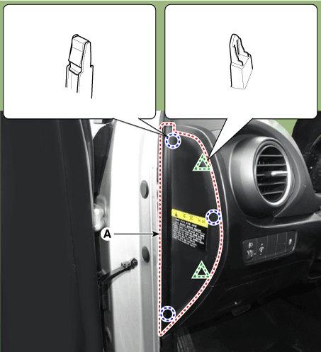
핸들 아래 패널
크래쉬 패드 로어 패널그림에 표시된 나사를 풀고 운전석 쪽으로 당겨 뗍니다. 패널 뒤에 붙은 진단 커넥터(OBD)는 잠금을 누르고 빼 둡니다.
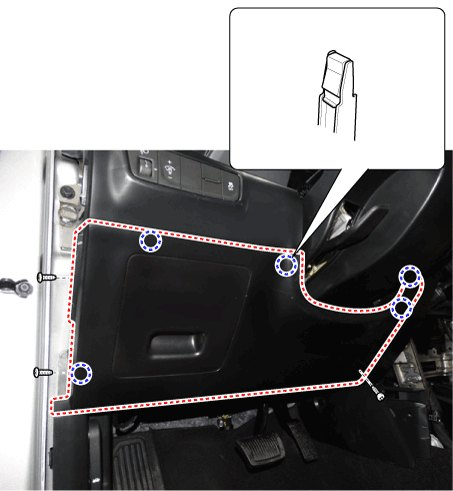
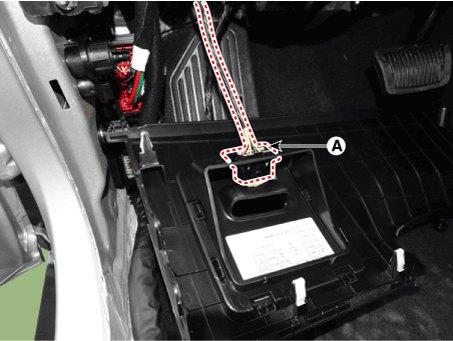
핸들 위 커버
스티어링 컬럼 쉬라우드 어퍼 패널핸들 기둥 위쪽 커버를 리무버로 들어 올려 뗍니다.
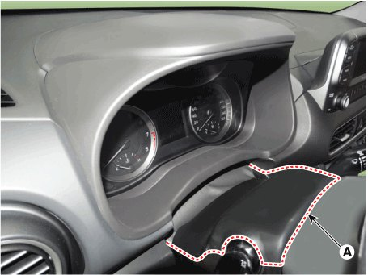
계기판 테두리
클러스터 페시아 패널계기판을 둘러싼 테두리를 그림의 클립 자리부터 당겨 뗍니다. 클립으로만 끼워져 있습니다.
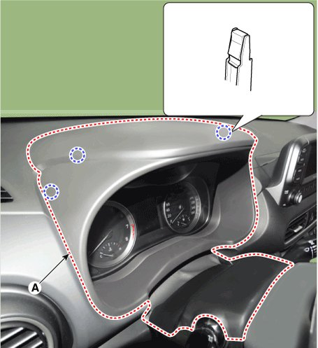
왼쪽 송풍구
사이드 에어벤트 덕트핸들 왼쪽 송풍구 둘레의 클립 자리를 리무버로 젖혀 송풍구를 뗍니다.
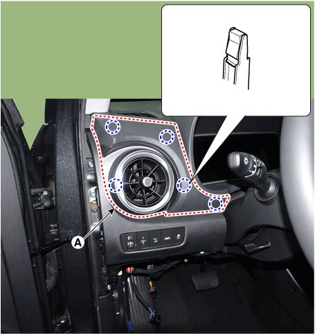
크래쉬 패드 스위치 떼기
크래쉬 패드 가니쉬 (LH)송풍구 아래 스위치가 붙은 패널입니다. 나사를 풀고 클립 자리를 당겨 패널을 뗀 뒤, 뒤에 붙은 스위치 커넥터(24핀)를 잠금을 누르고 뺍니다. 새 스위치는 이 자리에 들어갑니다.
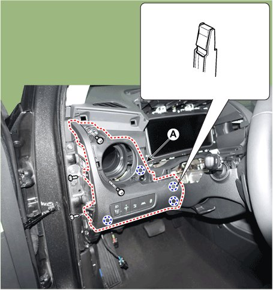
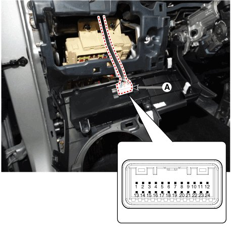
2. 조수석 패널 떼기
대시보드 옆면 커버 (조수석)
크래쉬 패드 사이드 커버조수석 문을 열면 보이는 대시보드 오른쪽 옆면 커버입니다. 운전석과 같은 방법으로 뗍니다.
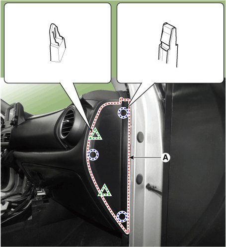
문턱 커버 (조수석)
도어 스커프 트림문 둘레 고무(웨더스트립)를 문턱 쪽만 살짝 떼어 낸 뒤, 문턱 커버를 위로 당겨 뗍니다.
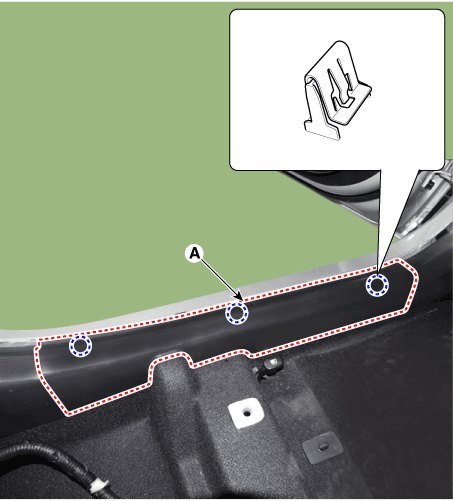
발 옆 패널 (조수석)
카울 사이드 트림클립 자리를 확인하고 실내 쪽으로 당겨 뗍니다. 아래쪽은 플라스틱 리벳 클립으로 고정되어 있습니다. 그림은 운전석 쪽이며, 조수석은 좌우만 반대이고 떼는 방법은 같습니다.
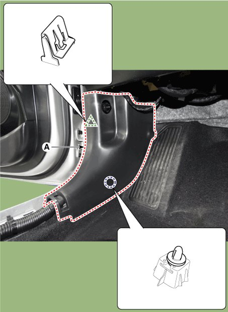
3. 배선 끌고 가기
컨트롤러 배선을 조수석으로
컨트롤러의 VALVE · ECM · GND 선을 운전석에서 대시보드 아래를 지나 조수석 발 옆까지 끌고 갑니다. 차량 하네스를 따라가며 몇 곳을 케이블 타이로 묶어, 페달이나 움직이는 부품에 걸리지 않게 합니다.
4. 배기 밸브 선 잇기 (조수석)
EF61 커넥터 찾기
EF61 은 엔진룸 하네스와 실내 바닥 하네스를 잇는 26핀 검은색 커넥터로, 조수석 발 오른쪽 안쪽(발 옆 패널 뒤)에 있습니다. 바로 옆에 EM61 · MF61 이 있습니다. 작업하기 편하게 EF61 잠금을 풀어 빼 둡니다.
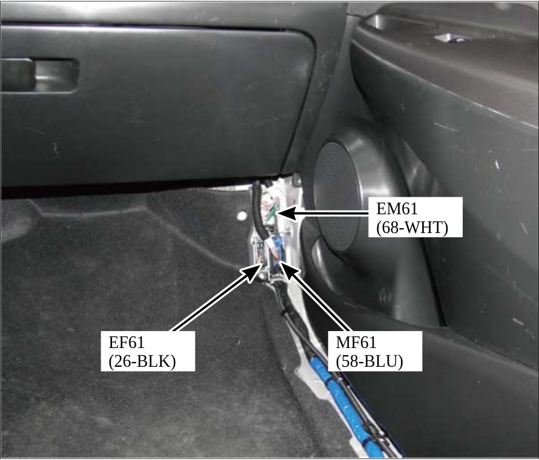
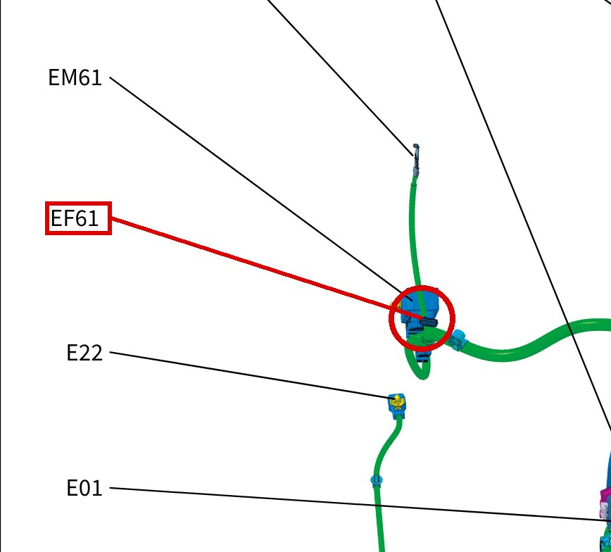
24번 핀 초록선 자르고 잇기
EF61 의 24번 핀 초록선이 배기 밸브 신호선입니다. 잇기 편하게 커넥터에서 조금 떨어진 곳을 자르고 아래처럼 잇습니다.
잇는 법
- 커넥터 쪽으로 가는 선 → 컨트롤러 VALVE 선
- 반대쪽(ECM 쪽)으로 가는 선 → 컨트롤러 ECM 선
- 컨트롤러 GND 선 → 커넥터 근처 10mm 접지 너트를 풀고 끼운 뒤 다시 조입니다
핀 번호와 선 색을 같이 확인한 뒤 자르세요. 이은 자리는 납땜과 수축 튜브 또는 전선 커넥터로 단단히 잇고 절연합니다.
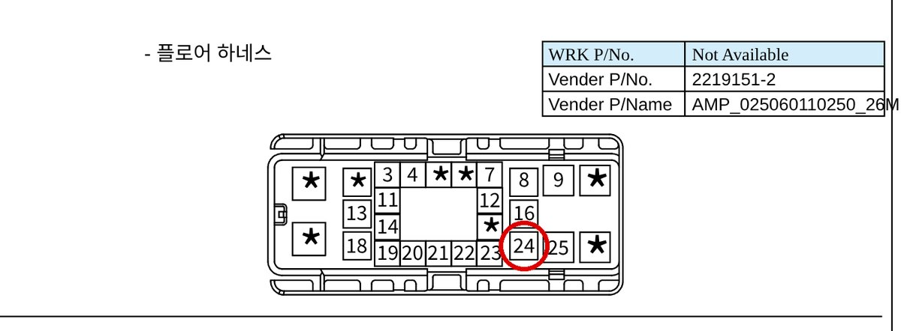
5. 전원과 스위치 (운전석)
전원(ACC) 선 잇기
핸들 아래 실내 퓨즈박스의 「예비전원(ACC)」 자리에 컨트롤러 ACC 선을 잇습니다. 퓨즈 탭을 쓰면 원래 퓨즈를 그대로 꽂은 채 전원을 나눠 쓸 수 있습니다.
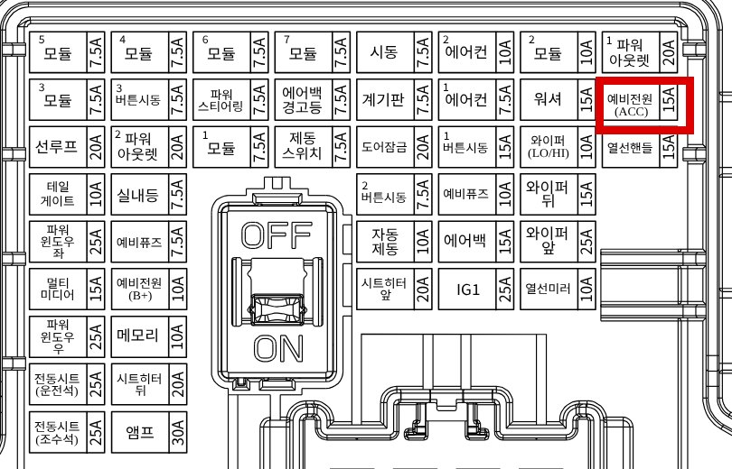
스위치 잇기
크래쉬 패드 스위치앞에서 뗀 패널의 기존 스위치를 새 스위치로 바꿔 끼웁니다. 배선은 차량 배선 → 컨트롤러 커넥터 → 새 스위치 순서로, 잭바이잭 배선을 사이에 끼워 잇습니다.
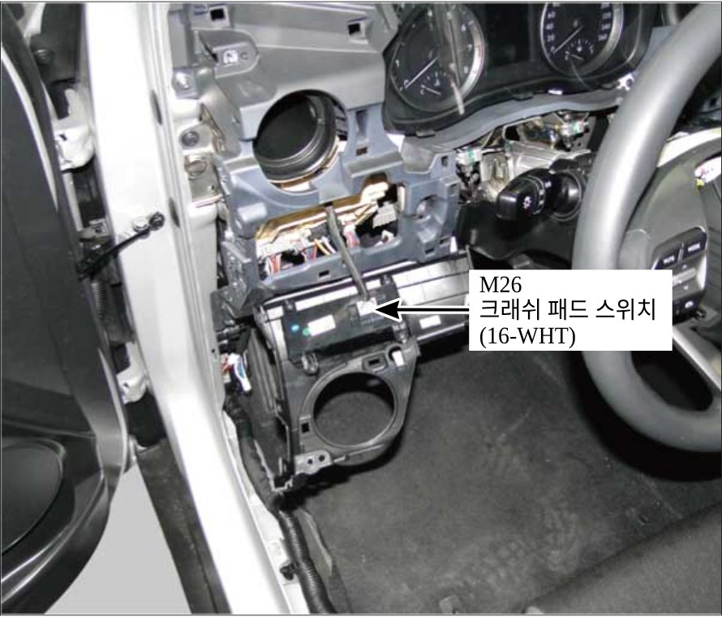
6. 확인과 조립
작동 확인 · 조립
시동을 걸어 스위치로 밸브가 정상으로 열리고 닫히는지 확인한 뒤, 선을 케이블 타이로 정리하고 뗀 순서의 반대로 조립합니다. 컨트롤러는 업데이트할 때 PC 와 USB 로 다시 연결해야 하므로, 핸들 아래 패널 안쪽처럼 꺼내기 쉬운 자리에 고정해 주세요.
패널 그림과 회로도는 현대자동차 정비지침서 · 전장회로도 그림입니다. 연식이나 사양에 따라 다를 수 있으니 실제 차량을 보고 작업해 주세요.